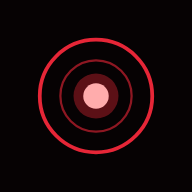

Where today's close sits between the lowest low and the highest high of the last six months.
Position = (close - 6-month low) / (6-month high - 6-month low). 0% is the bottom, 100% is the top. The rule fails a name in the top 15% of its range, or one that has already run more than two legs.
Near a six-month high, many buyers are already in. The question is how much of the move is left to be early for.
Strong stocks stay near their highs for months. A "top of range" fail can skip the best movers, and a low reading can be a stock that is simply broken.
Tested as part of the G1+G2+G3 stack on 2018-2021 data held back in advance. The stack failed (see above).
How stretched the last two weeks of price moves are.
Wilder's Relative Strength Index over 14 sessions: 100 - 100 / (1 + average gain / average loss), with Wilder smoothing. The rule meets from 40 to 65 and fails above 70.
Extreme readings often come before a short-term pause, so a middle reading means the move is not yet stretched.
In a real trend, RSI can sit above 70 for weeks while price keeps rising. The rule would keep you out the whole way.
Tested as part of the G1+G2+G3 stack on 2018-2021 data held back in advance. The stack failed (see above).
Did the stock close up on far more volume than usual?
Meets when the latest session closed up and its volume was at least 1.5 times the average of the prior 20 sessions.
A move on heavy volume is harder to fake than one on thin volume.
A volume spike is often news that is already priced in. Heavy volume says people are interested, not that more is coming.
On its own, G3 showed a small lift in how often trades hit (1.033, range 1.005 to 1.067) but no money edge after costs (-0.015, range -0.034 to +0.003). A lead, not a result.
Is there a dated, checkable reason for attention: earnings, an approval date, a contract, an index change?
No formula. You find it in public filings and calendars, and decide yourself how strong the evidence is.
It is the most logical of the five: a move with a reason behaves differently from one with none.
It is judgment, so it cannot be measured or tested the way the others can. Real catalysts are often priced in before you see them.
Not part of the tested stack. It cannot be scored by a rule.
Is this stock moving with something you already hold?
Pearson correlation of daily moves over the last 60 sessions against each holding. High at 0.70 or above, moderate from 0.50.
Two names that move together are one bet counted twice. It protects the portfolio.
It says nothing about whether the stock itself is any good. Correlations also shift in a crisis, exactly when you need them stable.
Not part of the tested stack. A portfolio check, not an entry signal.
Information and education only. Nothing here is a recommendation to buy or sell anything, and a rule being met says nothing about what a stock will do.
Privacy · Information and education only. Not investment advice.
Type a ticker. See how it measures against five written rules, and tap any rule to see exactly how it is calculated. Measurements of what already happened; not advice, not a recommendation.
Your watchlist, sorted by how many of the stated rules each name meets today.
Used only for the overlap rule (G5). Stored on this device.
| MARKET | SIGNAL | READING | MOVE | 52-WK RANGE | DEVIATION | UST HELD Δ 1M | Δ 6M | 6 MO | AS OF |
|---|
| CHOKEPOINT | LATEST DAY | 7-DAY AVG | BASELINE | % OF NORM | AS OF |
|---|
How to read it. Deviation is how far a signal sits from normal: its distance from the middle of its 52-week range, or a large move in one session, whichever is bigger. The heart beats from New York. Particles lean toward the hotter end of each artery; that is a display rule, not measured capital flow. The ring around a hub is a pressure gauge: how far round it sits tells you where the reading is in its own 52-week range.
Treasury holdings overlay. Lines run from a country's market to New York. Particles move toward New York where that country's reported Treasury holdings rose over the last month, away where they fell; line weight is the six-month change. Holdings change with prices and custody, not only buying and selling. The UK, Belgium, Luxembourg and Ireland are custody centers: their rows show where assets are held, not whose money it is.
Chokepoints. Daily ship transit counts from satellite tracking, compared with the same chokepoint's own average. Published with a lag of days. Low traffic is a measurement, not a forecast.
What this is not. It describes what already happened. It does not predict prices, and nothing here tells anyone what to do with money.
RSI (the PULSE layer). The 14-day relative strength index (Wilder) of each market's own daily readings. It describes recent speed and direction of movement. It is not a signal and does not say what happens next.
Correlation (the SYNC layer). Pearson correlation of daily changes over the latest 60 shared days, shown only where it is 0.5 or stronger in either direction. The euro-quoted currencies all share the euro as their base, so some of their sync comes from that shared base. Correlation is not causation and changes over time.
Free to use. If it was useful, $1 keeps it running.
Disclaimer. Amalgam™ is an information display built from public data sources. It is not investment, financial, legal, or tax advice, and it does not recommend buying or selling any security, currency, or commodity. Data may be delayed, incomplete, or stale, and visualizations are illustrative, not predictive. Past patterns do not indicate future results. You are solely responsible for your own decisions.